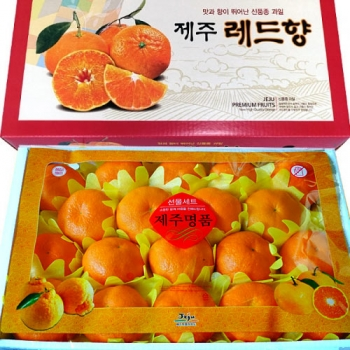

껍질에 붉은 빛이 돌아 레드향레드향이라 불린다.
레드향은 한라봉과 귤을 교배한 것으로 일반 귤보다 2~3배 크고, 과육이 붉고 통통하다.
비타민 C와 비타민 P가 풍부해 혈액순환, 감기예방 등에 좋은 것으로 알려져 있다.
재료 : 레드향 1개, 아보카도 1개, 토마토 1개, 샐러드 채소 30g
드레싱 : 올리브유 1큰술, 레몬즙 2큰술, 꿀 1큰술, 소금 약간